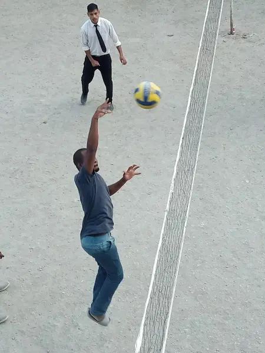

This is my pet Simba, the only survivor of a family of 8 cubs that passed on 2 days after birth due to an unknown illness.
In 2014, I went for a cricket tournament with my University team, we were 3rd at National level and the team was just amazing!
Here is a picture of our lobola day on December 20, 2020.
In Sept, 2017, I met Yusuf, a very calm and collected gentleman with disrutive ideas on entrepreneurship and art, such a talent!
This was 2020 in Shimla, Himachal Pradesh, India. The other sport I played was chess.

In June of 2021, we were blessed with this wonderful bundle of joy, my life has never been the same! God I love these humans!